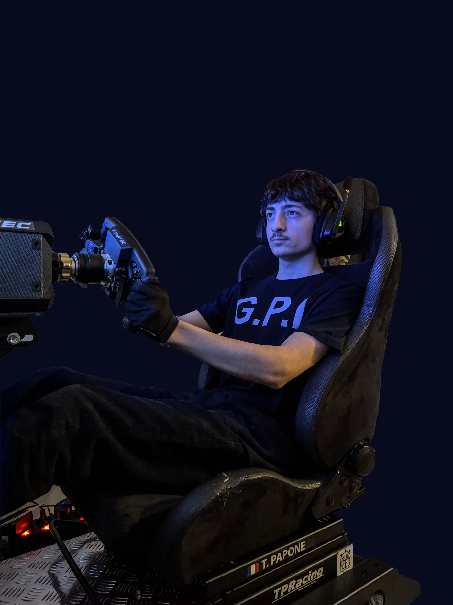
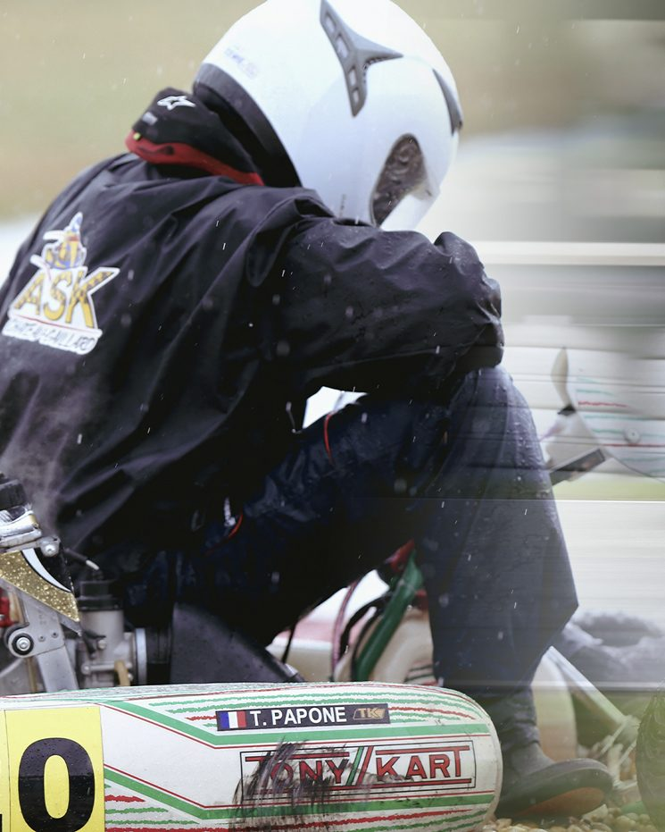
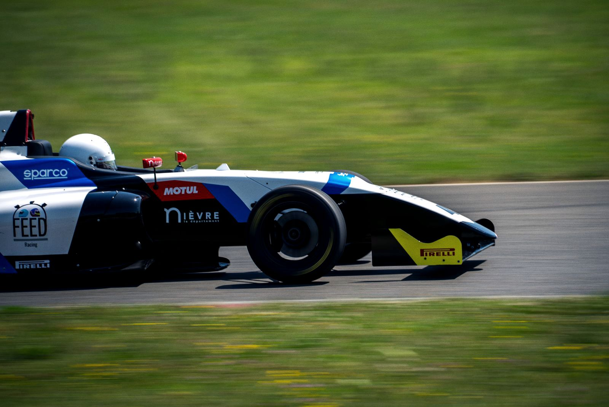

Pilote et co-fondateur de TPRacing
Thomas Papone
Formé en karting de compétition, entraîné chaque semaine sur simulateur, passé en monoplace à l'école FEED Racing France. Un cap assumé : rejoindre la course automobile via le programme Caterham, une étape à la fois.

Sur Instagram
Les derniers posts
Le parcours
Une progression construite
étape par étape
Karting de compétition
Les bases se posent en kart : courses de ligue, roulages d'entraînement, du sec à la pluie. C'est là que s'apprennent les départs, les dépassements et la lecture de course.

Simracing
Entre deux roulages, l'entraînement continue sur iRacing : régularité, trajectoires, gestion des courses longues. Le simulateur TPRacing est le laboratoire du projet.
FEED Racing France
Le passage en monoplace à l'école fondée par Jacques Villeneuve et Patrick Lemarié : premiers tours de roues en voiture de course, et la confirmation que la suite s'écrit sur quatre roues.

Caterham Objectif
Le cap du projet : entrer en course automobile via le programme Caterham et disputer un championnat sur circuit. C'est le chapitre que TPRacing construit aujourd'hui, avec ses partenaires.
La suite s'écrit maintenant
Partenaires, passionnés, curieux : le projet avance et tout se partage. Rejoignez l'aventure au bon moment, avant le passage en voiture.
Devenir partenaire